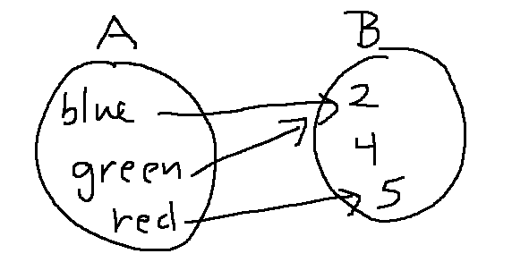
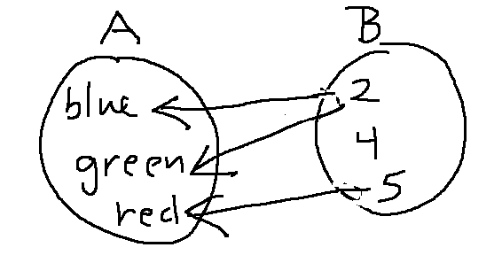
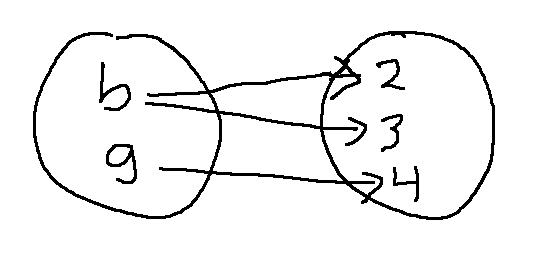
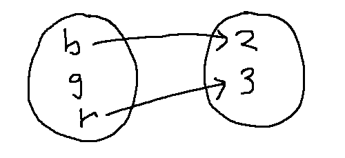
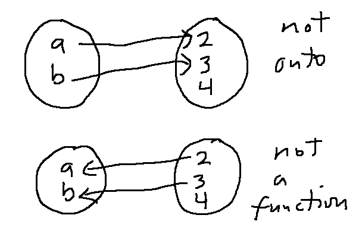
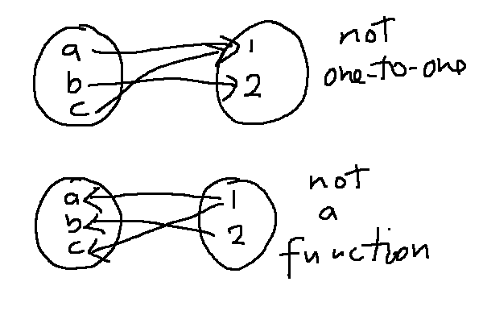
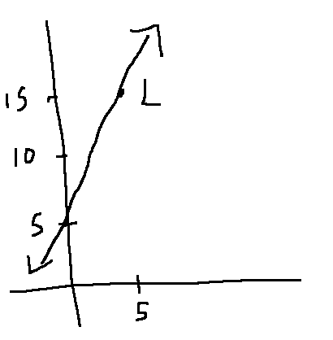

Here's a bubble diagram of a function between two small sets A and B. The set of input values (A) is called the "domain" of f. The set of output values (B) is called the "co-domain" of f.

Suppose that we'd like to invert f. So we reverse all the arrows in the bubble diagram (below). But this new drawing doesn't represent a function. A properly defined function needs to map each input value to exactly one output value. The input value 2 has two output values; the input value 4 has none

Let's pick these two issues apart. The two bubble diagrams below aren't functions, for different reasons. The lefthand one assigns two outputs to the input b. The righthand one assigns no output value to the input g. In the wider world of mathematics, these defects are sometimes allowed (e.g. "partial functions"). But we'll use a strict definition of "function" in this class.
 
So what properties should a function have, to guarantee that reversing the arrows will give us a properly defined inverse function?
In order to be invertible, a function f must be "onto". That is, if we put all the input values into f, we must generate all the values in f's co-domain. This is easiest to understand by looking at a failure example. The function below (top) is not onto. If we reverse the arrows, the input value 4 doesn't have an output value.

An invertible function must also be "one-to-one". It's easiest to explain what it means to be NOT one-to-one. In the picture below left, the two inputs a and c map to the same output value. When we reverse the arrows (right), we get an input value (1) that has two output values.

Failures of onto or one-to-one can theoretically be "fixed" by changing the function's definition. However, it's often convenient to have functions that aren't one-to-one or aren't onto. For example, the square root function isn't one-to-one. Functions that aren't onto appear frequently in geometric applications. For example, look at this definition:
\(f:\mathbb{R}\rightarrow \mathbb{R}^2\) such that \(f(a) = (2a,4a+5)\)
The declaration \(f:\mathbb{R}\rightarrow \mathbb{R}^2\) is the type signature. The domain of f is \(\mathbb{R}\). The co-domain is \(\mathbb{R}^2\).
The image (i.e. the output values it actually produces) is the set of all points of the form \((2a,4a+5)\). Or, rewriting in set-builder notation, the image is
L={ (x,y) in R : y = 2x+5 }
So the image L is a line in 2D. It's common in graphics to use functions like this to define curves. Notice that f isn't onto, because the image and co-domain are different.

Suppose we change the co-domain given in the definition of f. This new function g is onto.
\(g:\mathbb{R}\rightarrow L\) such that \(f(a) = (2a,4a+5)\)
This brings up another reason why we often see functions that aren't onto. The definition of L is somewhat complex, where \(\mathbb{R}^2\) is easy and convenient to write. In computer programs, it's even less convenient to specify an odd-shaped set when defining the output type of a function.
The best approach depends on your application. However, an overarching point is that you have to watch the type signatures on mathematical functions, because the declared types will affect whether the function is onto and/or one-to-one.